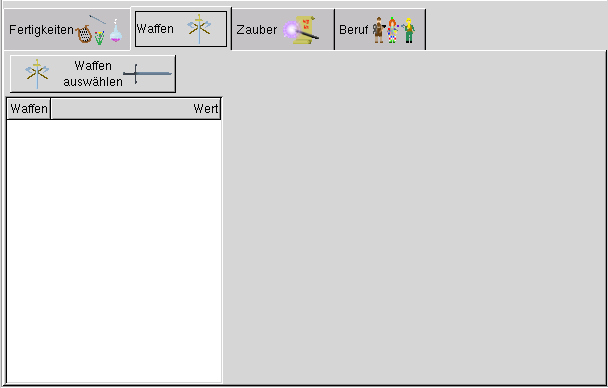
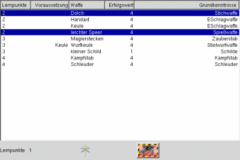

Hier werden die Waffenfertigkeiten ausgewählt, die der Abenteurer nach seiner Erschaffung beherrscht.

Bei betätigen dieses Buttens werden die Waffernfertigkeiten des Abenteurers ermittelt:
Es öffnet sich der Auswahldialog für die angeborenen Fertigkeiten (Abb. rechts).
Es werden die verfügbaren Lernpunkte angezeigt und die zur Waffenfertigkeit gehörenden Grundkenntnisse.
Die gewünschte Waffenfertigkeit wird mit der Maus selektiert und blau markiert.
Durch ein wiederholtes Anklicken mit der Maus wird die Waffenfertigkeit wieder abgewählt und
die Lernpunkte werden wieder gut gechrieben.